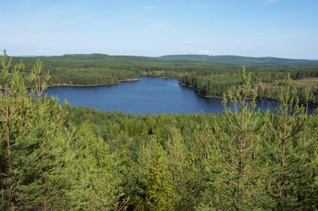

| Home | Kontakt | Steckbrief |
| Wandern/Trekking |
| Klettern/Klettersteige |
| Kanu |
| Fahrradtouren |
|
| Rucksack-Reisen |
| Touren mit Kindern |
| Wissenswertes |
In der Rubrik Rucksack-Reisen befinden sich Touren des Veranstalters
Rucksack-Reisen, die ich als Tourbegleiter betreut habe.
Waldläuferwoche im Glaskogen ReservatBei der Waldläuferwoche handelt es sich um eine kombinierte Wander- und Kanuwoche. Nach dreieinhalb Tagen wandern im Glaskogen Naturreservat folgt eine dreieinhalbtägige Kanutour zurück zum Ausgangspunkt, dem Aktivcamp Stömne. VorbereitungenNach Ankunft des Reisbusses und dem Frühstück geht es ans große Ausrüstung und Lebensmittel sortieren. Da nach dreieinhalb Tagen ein Wechsel erfolgt, müssen sowohl die Rucksäcke wie auch die Tonnen für den Kanuteil gepackt werden. Dabei sollte man überlegt vorgehen. Das Zelt, den Schlafsack und die Isomatte braucht man bei beiden Teilen. Die mitgelieferten Lebensmittel sollte man sich genauer ansehen. Für den Wanderteil empfehlen sich die leichten Lebensmittel und man sollte auch nicht zu viel mitnehmen. Die schweren Lebensmittel, wie Konservendosen landen also in den Kanutonnen. Die Kanutonnen werden im Camp eingelagert und später per Fahrzeug mit den Kanadiern zur verabredeten Wechselstelle gebracht. So braucht jeder Gast nur für dreieinhalb Tage Gepäck im Rucksack zu schleppen. Das sollte von jedem zu schaffen sein.Der StartNachdem alles verpackt ist, starten wir direkt am Camp und gehen über den hinter dem Haus liegenden Burghügel und am Badesee vorbei in Richtung Nordwesten.Blick vom Burghügel Schon bald wird der Weg schmaler und man bekommt einen Eindruck, wie es in den nächsten Tagen weitergehen wird. Der Weg geht einspurig mal rauf und mal runter durch Wälder und Blaubeerenbüsche.

Der Tangsjärn im Glaskogen Naturreservat Nach einer letzten Steigung mit Blick auf den Tangsjärn erreichen wir den Übernachtungsplatz, einer nach einer Seite hin offenen Schutzhütte, gelegen an einem Verbindungsfluss zweier Seen. Dort werden erst einmal die noch schweren Rucksäcke abgeworfen. Wer Angst vor Mücken hat baut ein Zelt auf. Man kann aber auch in dem Windschutz übernachten. Als nächstes muss Trinkwasser geholt werden. Das verbindet man am Besten mit einem Bad im See, denn in Ufernähe schmeckt das Wasser im Allgemeinen nicht so lecker. Nach dem ersten Outdoormahl und einigem Tee mit Geschmacksverstärker fallen alle totmüde in den Schlaf. Der Platz für die erste Nacht In den nächsten Tagen gehen wir weiter auf schmalen Wegen durch den Wald. Ab und zu kreuzen wir Schotterpisten. Andere Wanderer sieht man nur sehr selten. Unser Ziel ist das Südufer des Stora Gla, ein See inmitten des Glaskogen. Auf schmalen Wegen durch den Wald Am Ziel bei Dammarna befindet sich ein kleiner Campplatz, der per Schotterpiste erreicht werden kann. Hier steht Dienstag vormittags ein Fahrzeug mit unseren Kanus und der vorher vorbereiteten Ausrüstung. Wir tauschen unsere Rucksäcke gegen die Tonnen und paddeln nach einer kurzen Kanueinweisung hinaus auf den Stora Gla. Gegen Abend nutzen wir einen der eingerichteten Lagerplätze am Seeufer. Auch hier finden wir wie in den Nächten zuvor von den Rangern vorbereitetes Feuerholz. Im Laufe des nächsten Tages verlassen wir den Stora Gla und verladen die Kanadier für eine Portage auf die Kanuwagen. Ein neuer See, der uns unserem Ziel näherbringt, ist schnell gefunden. In den nächsten Tagen wechseln sich Seestrecken und Portagen ab, bis wir bei Sölje den Glafsfjorden erreichen. Auf dem Glafsfjorden paddeln wir zurück zum Ausgangspunkt in Stömne, wo wir am Freitagnachmittag eintreffen. GeschafftNach der Einlagerung der Ausrüstung haben wir genügend Zeit, um anderen Gästen von unseren Erlebnissen zu erzählen.Informationen: Reiseinformation von Rucksack-Reisen Homepage des Glaskogen Naturreservates |